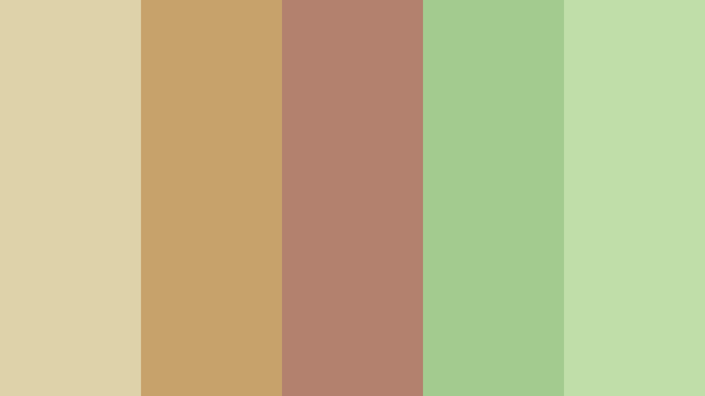

The Red Chapter
No one exists in a vacuum, and our perceptions of ourselves consist of many parts. There is what we've
internalized,
how we compare ourselves to the things we externally idolized and maybe somewhere deep down there is
some true unadulterated sense of self.
The first description that popped into my head when asked to describe myself was "Basic".
As a young woman who likes pastel, Lana Del Rey and uses light mode on every website and application I
have (Which I am never going to change).
I've been called Basic. While now I may think I'm less easily influenced than that 8-year-old girl who
change her favourite colour from pink to red
because some older girls told her that was a childish colour to like. Am I really any different? While I
stopped pretending my favourite colour is red,
I still, 13 years later I find myself apprehensive to buy anything pink, the colour acting as a
repellent designed specifically for me
and most of my wardrobe remains a bright crimson red.
The Lilac Chapter
My favourite is the colour lilac, a very specific shade of purple that if I described any further, I'd
be describing pink.
It was an easy out, soft, feminine and niche enough that even those it was very girly. It was novel
enough to not be called too girly or too childish.
After 5 years of being in a mostly male friend and solely embracing my more male-dominated hobbies and
interest, can you blame me for being a bit fatigued?
I didn't want to be treated like "one of the boys" by the world around me.
Yes, and while I knew changing my favourite colour would not change the fact I was simply bad at
performing my gender. But it was a start.
The Blue Chapter
Blue is the colour of sadness and it's much easier to find accessories in than "lilac". Blue is such an
unassuming colour,
liked by both boys and girls alike. No one ever gets criticized for liking blue. With that alone,
wouldn't blue be the perfect favourite colour?
I wouldn't need to be so caught up on how others perceive me base on the answer to one question. Or what
I choose to flood my wardrobe with.
But blue is just too boring and calling it my favourite is a lie that is too difficult for me to tell.
And while I don't know if I like or ever liked pink, red or lilac, or just liked their utility.
Maybe I finally changed, or always value colours for something arbitrary than their utility.
As an overly sensitive, crybaby who cries when she sees other people cries, I can't say I disagree with the results. However, I disagree with the method. While taking the Personality Test found on The Keirsey Website I several times found myself choosing between two answers I equally agree with. Because a person can't both consider their decisions based equally on Data and Desire or act differently bases on the situation and their environment, right? I found this personality test and personality test in general quite reductive, as to force people into these boxes require you to exclude significant aspect of their personality if they don't fit neatly in these boxes.